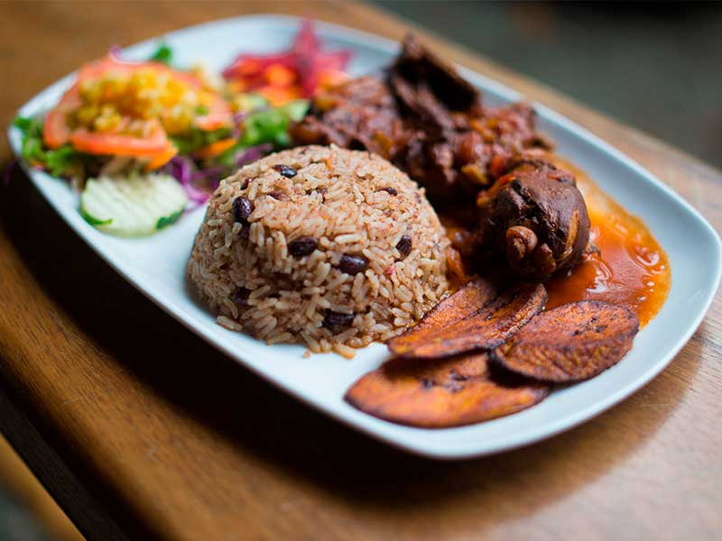

Caribbean Rice and Beans

Ingredients:
- 2.5 cups water
- 1.5 cups coconut milk, NOT low fat version
- 2 cups long grain white rice rinsed and drained
- 2 cups long grain white rice rinsed and drained
- 5 sprigs fresh thyme
- Coarse salt and freshly ground black pepper to taste
- 1.5 cups cooked red beans about 1/2 cup dried
Instructions:
-
In a heavy bottomed stock pot, add water and coconut milk. Bring to
a boil over high heat.
-
Once boiling add rice, panamanian pepper and thyme. Bring to a
simmer and cover until cooked.
- Remove pepper. Add in cooked beans and season to taste.